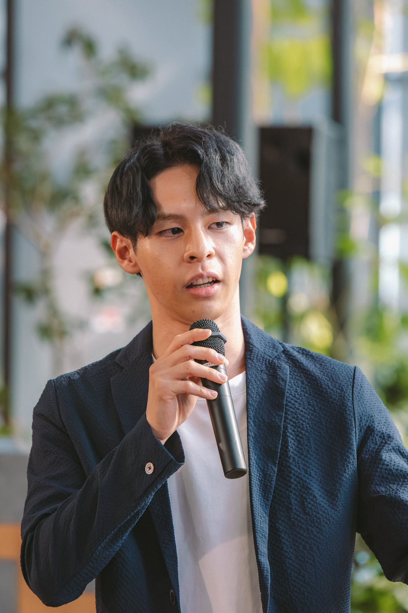

ABOUT
代表プロフィール

藤田裕二
TomoRevo 代表 / ITコーチ
元システムエンジニアとして培った技術力。パーソナルジム経営で磨いた「人に寄り添う力」。コーチングと選択理論心理学の実践。そしてAIを日常に溶け込ませる圧倒的な使い込み量。
この掛け合わせは他に誰もいません。
クライアントに「LINE構築お願いします」と言われたら、ただ作るだけではなく「本当にやりたいことは何ですか？」から始めます。想いを引き出し、それをそのままITで形にする。それが僕の仕事です。
VALUES
大切にしていること
関わる全ての人がワクワクする状態を目指しています。一緒に働く仲間、クライアント、そしてクライアントの大切な人まで——誰かだけが我慢する形は作りません。
依頼されたことをそのまま実行するのではなく、「本当に求めているもの」を一緒に明確にし、最も効果的な選択ができるようサポートする。それが僕の仕事のスタンスです。
VISION
子供たちが大人に憧れて育つ社会の実現
ひとりひとりの大人が人生の舵を自分で握り、日々ワクワクの感情に満ちた人生を過ごしている。その姿を見た子供たちが「大人になるのが楽しみだ」と思える世界を目指しています。
STRENGTHS
なぜ「ITコーチ」なのか
事業者としての視点
自ら事業を経営しているからこそ、経営者が本当に必要としているものがわかる。技術者目線ではなく、事業者目線で提案します。
対人サービスの経験
パーソナルジムの運営を通じて、目の前の一人に本気で向き合う力を磨いてきました。ITだけでは見えない「人」の部分を大切にします。
選択理論ベースのコーチング
選択理論心理学に基づいたコーチングで、クライアント自身が「本当にやりたいこと」を明確にするプロセスを支援します。
システムエンジニアのスキル
元SEとしての技術力で、構想を確実に形にする。設計から実装まで、一気通貫で対応できます。
AIやITによる時間創出はあくまで手段です。本当に大切なのは、浮いた時間やリソースを「自分のビジョンを磨く時間」や「最もワクワクする仕事」に投入すること。その実現のために、ITとコーチングを掛け合わせています。